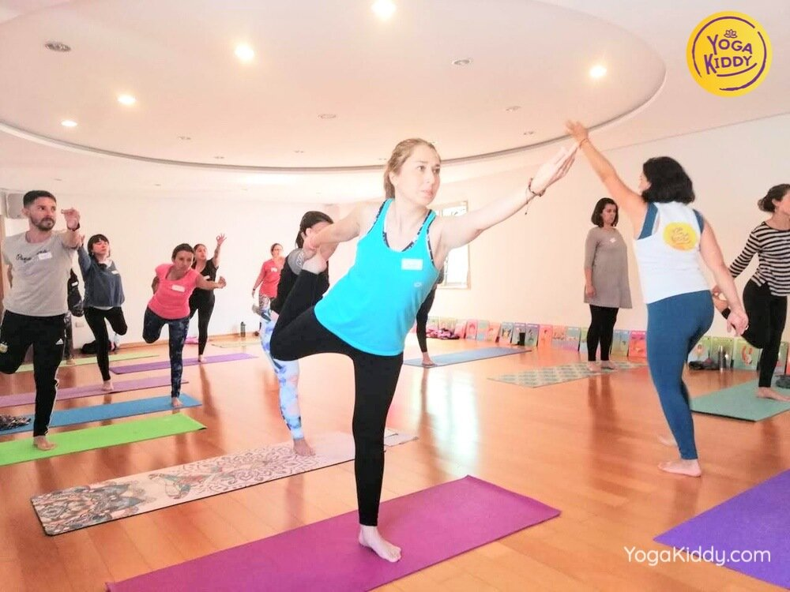
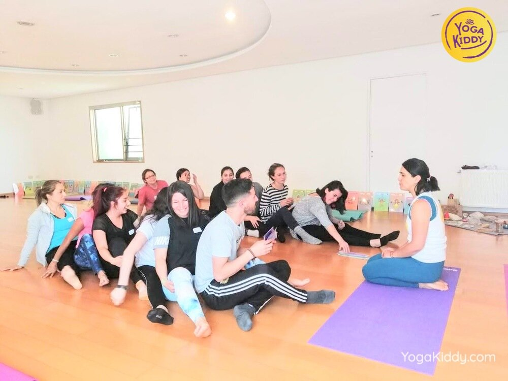
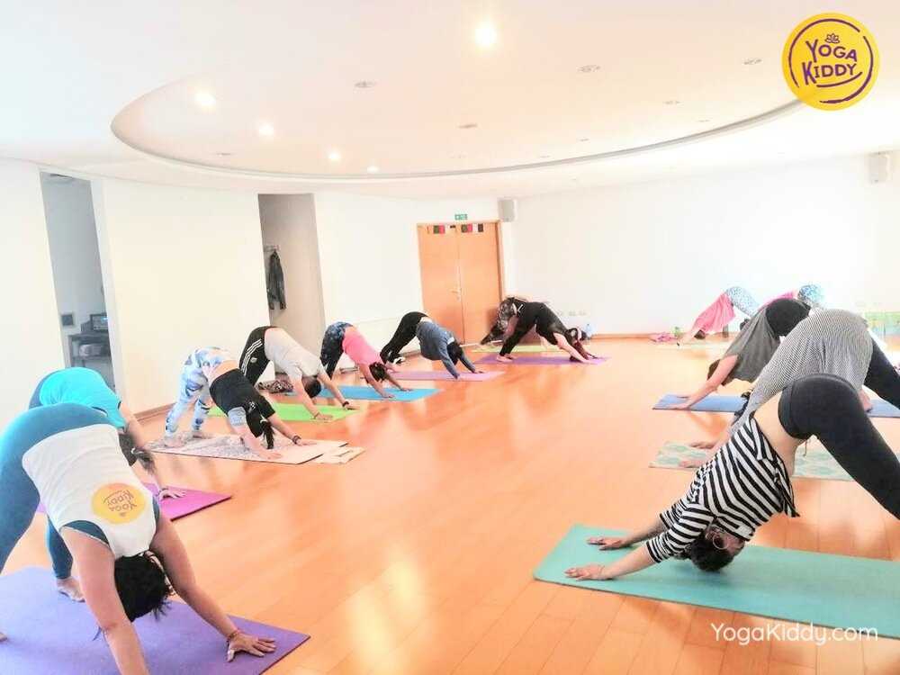
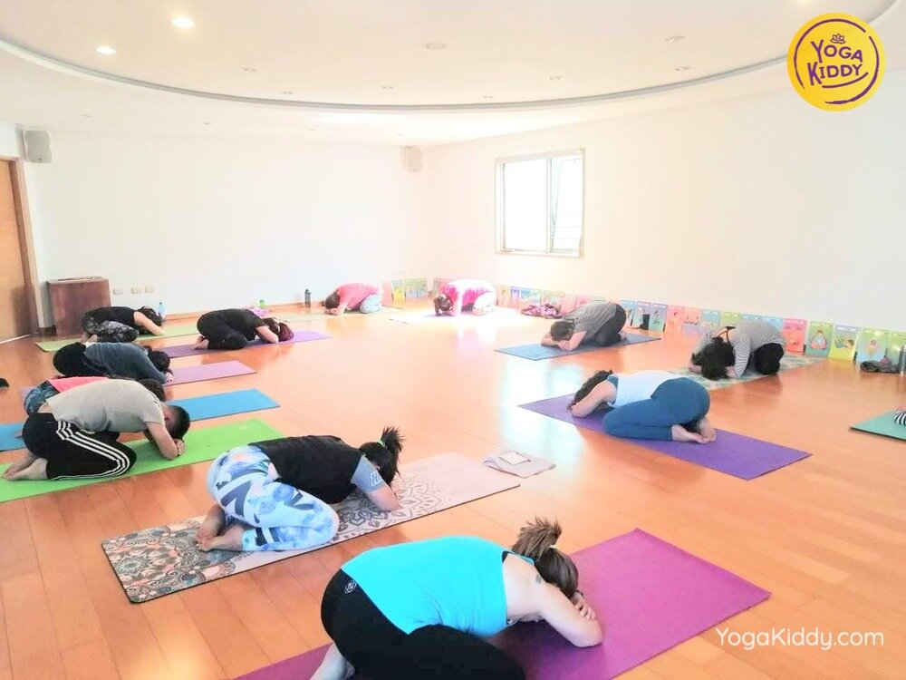
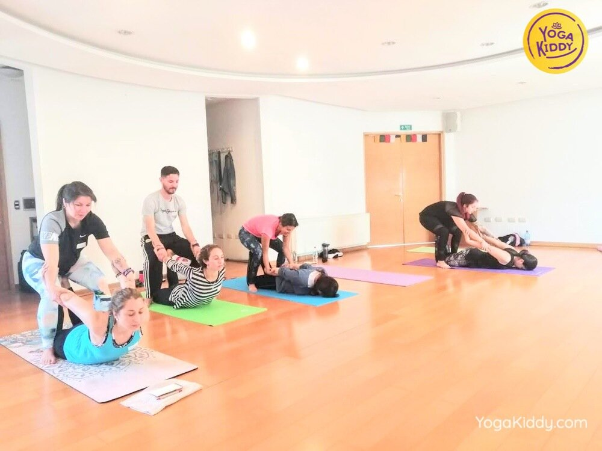
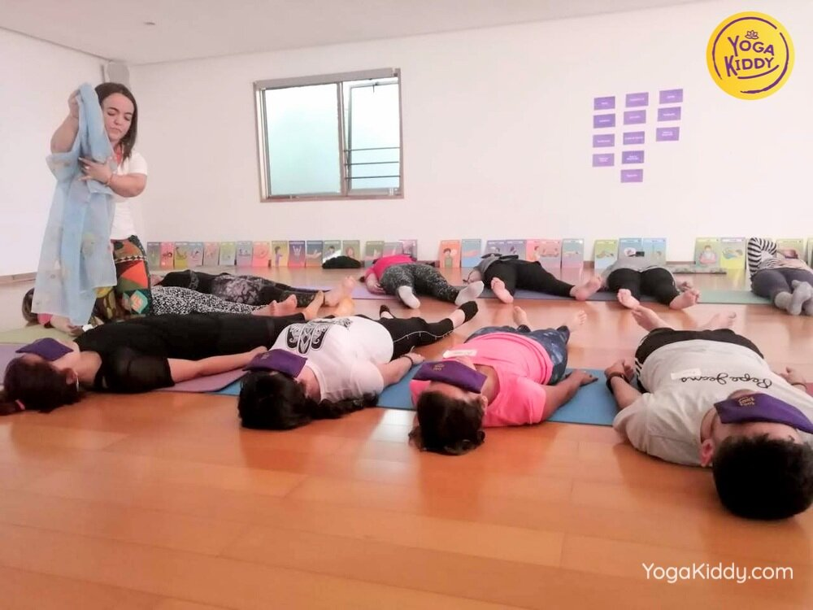
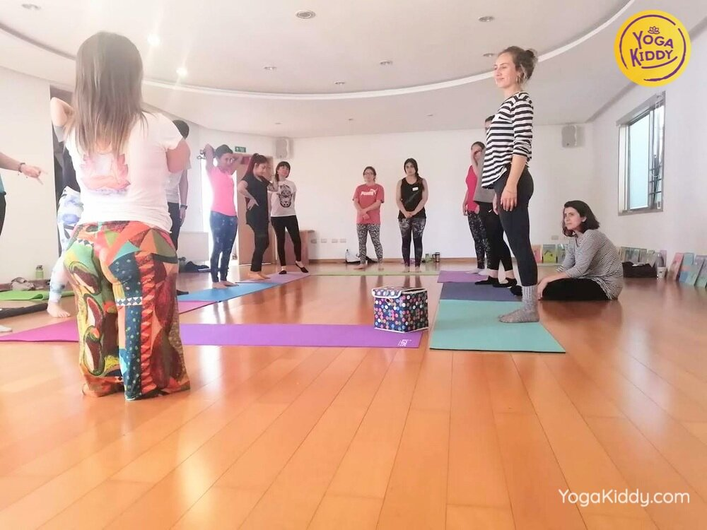
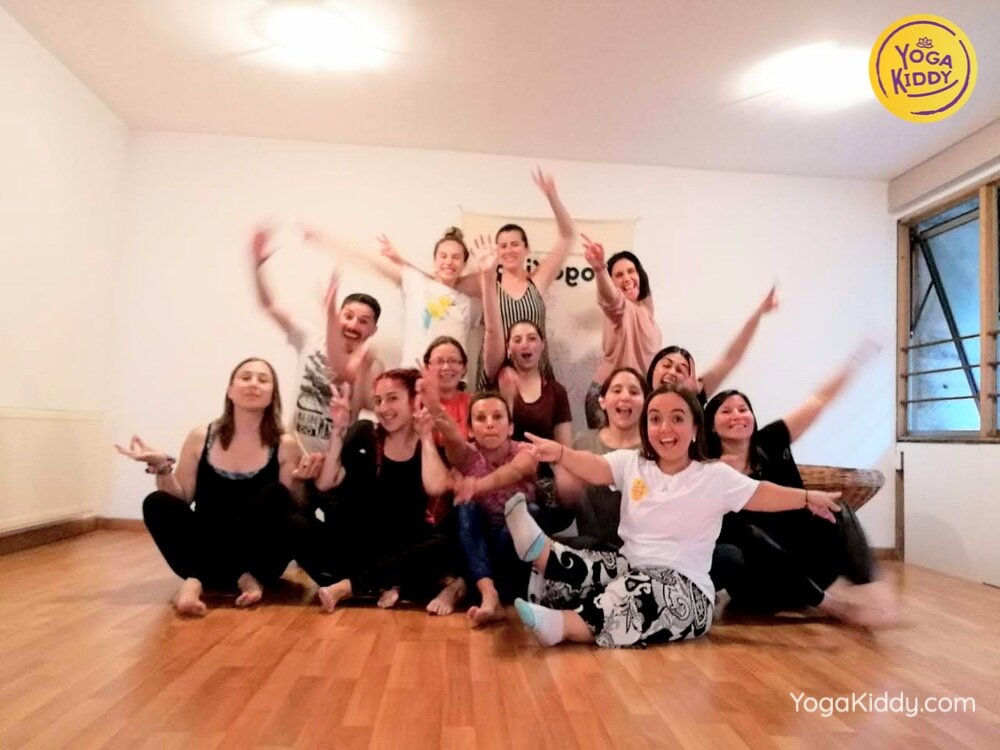
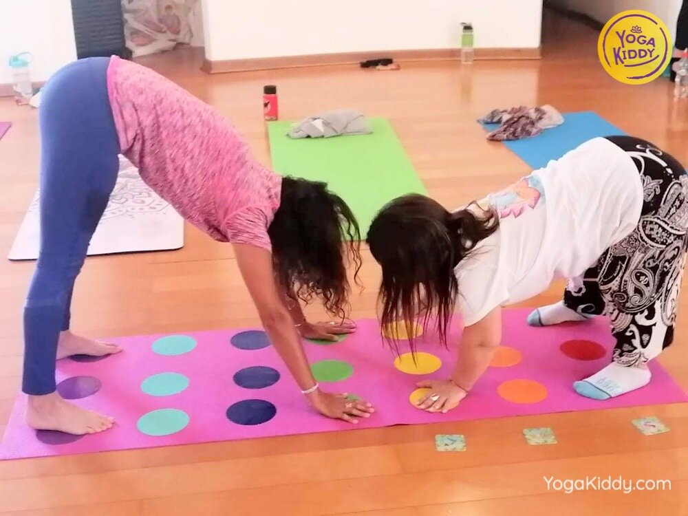

Gracias a este maravilloso grupo que nos acompañó el fin de semana recién pasado en la ciudad de Concepción 🇨🇱🧘♂️💖🧘♀️.
Debido a la contingencia vivida en nuestro país, fue una de las formaciones que debimos posponer y estamos muy felices de que pudimos realizarla sin ningún inconveniente para nuestr@s alumn@s ni para las facilitadoras 🕊.
Gracias de corazón a cada un@ por la paciencia y la entrega en esta experiencia mágica que pudieron vivir junto a nuestras queridas Madhu y Vanessa.
Hasta muy pronto Concepción y bienvenid@s a la familia YogaKiddy 🙏🕉






Maravilloso registro que nos trajeron Madhu y Vanessa desde Concepción, donde tuvimos la oportunidad de realizar nuestra formación de Monitor de yoga Infantil junto a este hermoso grupo, después de un mes de postergación debido a todo lo que esta pasando en nuestro país 🇨🇱🕊.
Nuevamente agradecidas de la oportunidad de compartir estos dos días en donde el aprendizaje mutuo siempre se hace presente y atesoramos cada experiencia compartida 💖🙏.
Hola mi nombre es María José, me gustaría compartirles mi experiencia en el curso. Creo que es una preparación muy linda la que generan las chicas, generan un ambiente muy cálido, un amor que transmiten; que es el mismo amor que queremos transmitir a los niños y la verdad que te dan una experiencia muy linda para generar este cambio en los niños que es lo que necesitamos hoy en día. Yo le agradezco enormemente a las chicas todo lo que nos enseñaron, lo que nos transmitieron porque te dan ganas de seguir en este camino y eso lo agradezco para siempre. Muchas gracias a YogaKiddy
Hola mi nombre es Carla y soy de la ciudad de Concepción. Estoy muy agradecida a Yogakiddy por esta formación de monitor de yoga infantil. Los invito a que se animen porque las monitoras son super amorosas, son cercanas y la verdad que los conocimentos que te entregan te abren una puerta para el trabajo con tus niños y tienen muchos materiales asi que lo recomiendo al 100%.